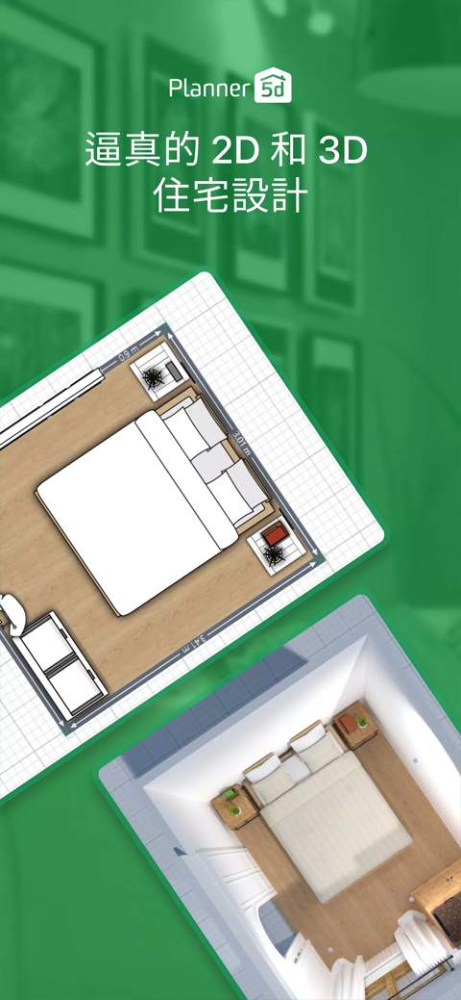
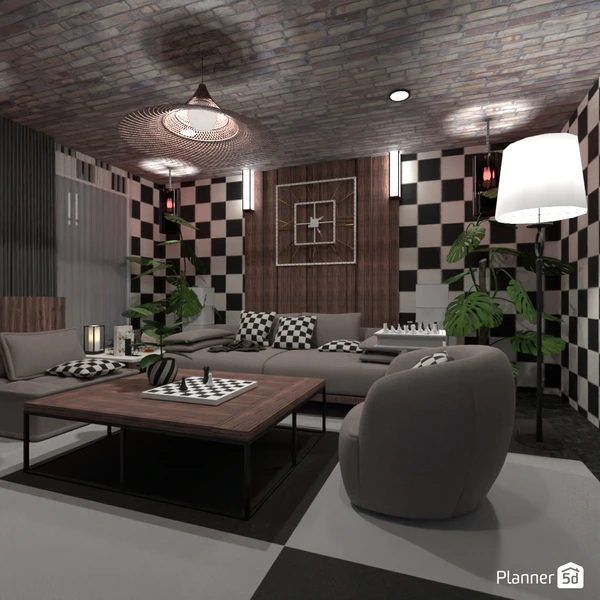

Planner5D 的版本进化史：从画平面图到用 LiDAR 扫房间
Planner5D 这几年到底迭代了什么？从手动拖拽到 AI 帮你摆家具、从尺量到手机扫描、从草稿纸到 CAD 导出——梳理这款软件的成长轨迹和团队的产品哲学。
现在打开Planner5D官网，Feed 页最显眼的入口不是"新建项目"，而是三个 AI 驱动的选项——Scan Room、Home Scan、AI 户型识别。Copilot AI 悬浮在右下角，随时能用自然语言下指令："把这幅画挂到南墙上"、"餐桌旋转 90 度"。 Professional 版的用户还能直接导出 DWG/DXF，把草稿丢给 AutoCAD 继续深化。
如果三年前有人说一款面向普通用户的装修工具会长成这样，我是不信的。那时候我对 Planner5D 的印象还停留在"网页上画个平面图、拖几件家具进去看个大概"——够用，但不惊艳。现在回头看，Planner5D 的版本进化史其实是一部很典型的"工具软件如何接住 AI 浪潮"的样本。
来路：从 2D 到 3D，再到 AI 接管
样本文档里没有给出明确的版本号时间线，这本身就能说明一些事——Planner5D 的迭代不是靠大版本号划线，而是一层一层往上叠功能。如果从今天能看到的功能倒推，它的成长轨迹大概是这样的：
最早的 Planner5D 应该就是一个纯 2D 的平面绘制工具。在网页上画墙、标尺寸、拖家具，仅此而已。那时候它解决的核心问题是"不想用 AutoCAD 的普通人怎么画自己家的户型图"——把专业软件的门槛拉到了浏览器里。
然后它长出了 3D。这一步不难想，几乎所有室内设计工具都会往这个方向走，但 Planner5D 的 3D 做得挺克制——它不追求照片级渲染，而是让你在摆家具的时候随时切 3D 看一眼"会不会撞门"、"吊灯会不会太低"。这个定位一直保留到现在，最新的 4K 渲染功能也是给需要展示的用户准备的，核心交互还是 2D 画布 + 按需 3D 检查。
移动端跟进得早。从官方下载渠道能看到 iOS 和 Android 都有完整的 App，而且手机端不仅是"看项目"——Home Scan 功能直接要求你举着手机在房间里录视频，这是纯移动端才有的使用场景。能走到这一步，说明团队很早就想清楚了"装修这件事不是坐在电脑前能完成的"。
真正的转折点是 AI 能力的接入。而且不是一步到位，是分层递进的：
第一层是输入自动化——AI 户型识别。给一张户型图照片或 PDF，自动抽出墙体和门窗。这一步替用户省了最耗时的"量房 → 手动画墙"环节，但用户仍然是"纠正者"，AI 识别完之后得手动核对尺寸、修正偏差。
第二层是空间感知——Scan Room 和 Home Scan。LiDAR 扫描直接把真实房间变成 3D 模型，误差能控制在 ±5cm 以内；没有 LiDAR 的手机也能用 Home Scan 环绕录制一段视频，AI 反推空间结构。这一层比户型识别又往前走了一步：用户不再需要一张"干净的图纸"当输入源，真实空间本身就是输入。
第三层是交互自动化——Copilot AI。直接说"把沙发转一下让它不挡门"，它就帮你摆好；说"恢复刚才删掉的家具"，它就找回来。这一层最有意思，因为它不是帮你"输入"，而是帮你"操作"——把原来需要 10 次拖拽微调的动作压缩成一句话。
这个分层逻辑很清晰：先帮用户省输入的事，再帮用户省操作的事，未来大概率会帮用户省"想"的事（自动优化布局、生成多套方案让你挑）。

团队一直在死磕什么
从功能叠加点上能看出团队的优先级：
第一优先级永远是"降低启动成本"。 手动画墙 → 户型 AI 识别 → LiDAR/视频扫描，用户从"需要一张干净图纸"到"什么都不需要，带手机就行"，这个方向贯穿了所有版本。为什么？因为 Planner5D 面对的不是专业设计师，而是"我想在装修前看看效果"的普通用户——这群人的最大痛点不是功能不够，是"懒得动手量房画图"。
第二优先级是"让移动端真正能用"。 很多设计工具的移动端只是个预览器，Planner5D 不一样——Home Scan、Scan Room 这两个核心输入功能只在手机上有（或者说手机上才好用）。样本文档里提到的 ARKit/ARCore 支持也是移动端专属的。这说明团队把移动端当成主战场之一，而不是附庸。
第三优先级是"分层付费，把最狠的功能锁在高等级订阅"。 户型识别是 Premium 以上才有的，Professional 版才能导出 DWG/DXF。Copilot AI 在免费版也能用，但高级指令和响应速度可能有差别。这种分层对普通用户来说其实是好事——免费版足够画个简单户型看看，真要深挖功能细节可以翻Planner5D文档再考虑升级，不会一开始就被付费墙挡住。
那什么一直不管？样本文档里完全没提多人实时协作、没提跟家居品牌的生态对接（比如"在家具目录里直接买到你拖进去的沙发"）、没提装修预算自动计算（虽然备份文档里提到了"预算清单"可以导出图片，但没说有专门的预算功能）。这可能是因为团队目前的资源还集中在"让单个用户的单次设计体验足够流畅"，生态化的事得等核心体验跑通了再说。
预判：下一步大概率往哪走
从迭代规律推，有几个方向概率很高：
AI 会更深地介入设计决策。 现在 Copilot AI 还只是"帮你执行指令"，下一步应该是"帮你出方案"——比如输入"客厅 30 平米、北欧风、预算 4 万"，AI 直接生成两三套完整布局让你挑，然后你再微调。这个功能如果做出来，会把 Planner5D 的门槛再降一大截。
LiDAR 扫描的精度和兼容性会继续提高。 现在 Scan Room 只支持带 LiDAR 的苹果设备，Home Scan 精度只有 ±10-20cm。未来 Android 阵营越来越多机型带深度传感器，Home Scan 的识别模型也会迭代，手机扫描可能会变成默认的量房方式，手动画墙彻底变成"老派操作"。
Professional 版的专业格式支持会扩展。 现在有 DWG/DXF，下一步可能是 IFC（建筑信息模型标准格式），那样 Planner5D 就能跟真正的 BIM 工具链打通，从"给业主看的效果图"往"给施工队用的技术图"跨一步。
当然这些都是从迭代规律推的，不当官方口径传。
对普通用户来说意味着什么
如果你只是想在装修前看看效果，其实免费版已经够用了——手动画墙 + 拖家具 + 3D 视图，这个组合十年前就有了，Planner5D 的基础能力一直没丢。真正有价值的是那些 AI 功能：户型识别能替你省一两个小时的量房和画图，LiDAR 扫描能让你在收房当天就把新家的 3D 模型建出来，Copilot AI 能让"把床头从西墙换到东墙再调整一下"这种事从 5 分钟变成 5 秒钟。
这不是"多了几个按钮"的升级，是一个工具软件接住了 AI 浪潮之后自然发生的形态变化。Planner5D 没有跟风做"AI 生成整栋房子"那种噱头功能，而是在它最擅长的事——"把一个真实空间数字化，然后让你在里面摆东西看效果"——上一层一层地用 AI 替用户省时间。

这套设计思路和完整操作都整理在 Planner5D 的中文资料里了，文档、图片、项目结构这些内容分别放在几个仓库里，GitHub、Gitee、GitCode 都同步了一份，方便不同环境下访问。